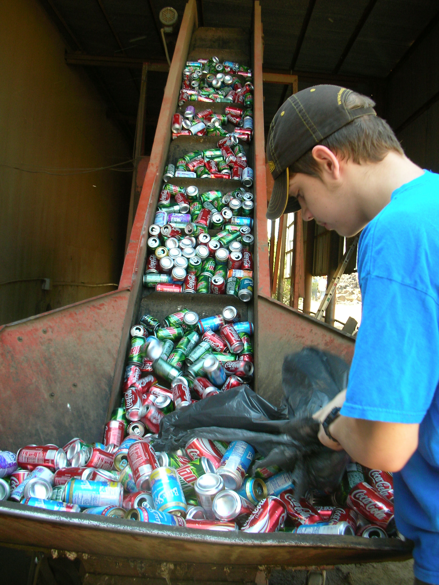

Of the 3.1 million tonnes of municipal waste generated in Ireland in 2019, 37% was recycled (down slightly from 38% in 2018), 46% was used in energy recovery (up from 43% in 2018) and 15% was landfilled (up slightly from 14% in 2018).
According to VOICE Ireland, we now generate around 3 billion single-use plastic bottles, over 582 million aluminium cans and 718 million glass bottles in Ireland every year.
While so many plastic water bottles are thrown away every day, when it comes to aluminum cans, the percentages are much better. It's estimated that we use over 80 billion aluminum beverage cans every year and that around 65% of these cans are recycled.

Plastics, cans and cartons: The yellow container. Snack wrappers and drinks cans.
Paper and cardboard: The blue container. ...
Glass: The green container. ...
Organic waste: The orange or brown container. ...
Other waste: The grey container.
These are all of the bins that correlate to each type of recyclable